- 切分策略
- 6 种Structure-Aware / 父子 / 人工 / 句子 / Token / 语义
- 工作区
- 24 小时临时批次，交付前请导出
- 向量维度
- 1024文本向量 1024 · 8192 Token
- 当前环境
- 可审阅Context / VLM 模型尚未配置
阅读说明
这篇手册按“先跑通一次，再逐项深入”的顺序编排。第一次使用，先看第 1、2、4 章，照着走一遍；之后遇到具体功能，再查对应章节。
原文不可变，人工修改只发生在 Draft 和人工标注层；Preview 不是结果，采用后才成为 Draft；模型生成的图片摘要和 Context 必须人工审核；修改之后等保存完成，再执行向量化和入库。
本手册覆盖上传、解析、六种切分策略、Preview / Draft、人工修订、图片与表格、Context、SPU 归属、Embedding、数据库写入、检索测试和导出。部署、密钥、对象存储和数据库运维不在范围内。
账号与密码请向管理员获取，本文不记录任何登录凭据。
平台入口与工作台
XShipAI 是一个应用桌面。登录后进入“应用程序”窗口，当前部署包含 6 个应用。本手册的主角是 Chunk Lab / 电商文档审阅台，入口地址是 http://203.0.113.10:18184/。
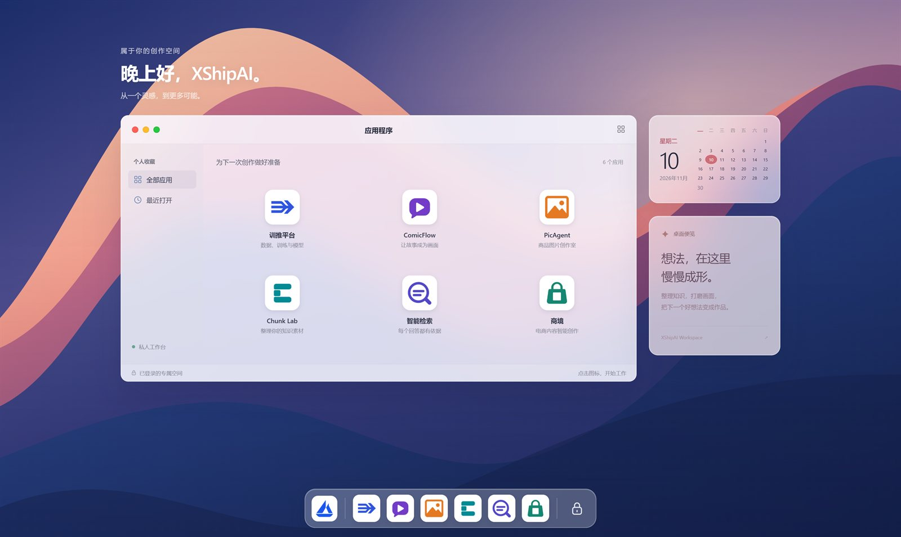
| 应用 | 副标题 | 与本手册的关系 |
|---|---|---|
| 训推平台 | 数据、训练与模型 | 模型与训练，不展开 |
| ComicFlow | 让故事成为画面 | 漫画/图像创作，不展开 |
| PicAgent | 商品图片创作室 | 商品图创作，不展开 |
| Chunk Lab | 整理你的知识素材 | 本手册主角：文档审阅台 |
| 智能检索 | 每个回答都有依据 | 消费入库后的知识，可从“检索验证”跳转 |
| 商境 | 电商内容智能创作 | 电商内容生产，不展开 |
登录与打开应用
未登录时打开地址会跳转到登录页。默认使用账号登录；管理员配置飞书后，也可以切换飞书扫码，仅限指定飞书群成员。登录成功后进入应用桌面。
- 打开应用：点击应用卡片，在桌面窗口内打开；窗口右上角可改为在新标签页打开。
- 搜索应用：顶部放大镜，或 Ctrl/⌘ K；按名称、副标题或 ID 搜索。
- 最近打开：左侧“个人收藏”切换全部应用和最近打开。
- 退出：右上角用户菜单或 Dock 右侧锁图标，选择“锁定并退出登录”。
- 重新加载：应用窗口右上角刷新图标；页面无响应时使用。
如果从应用窗口复制出端口地址、直接在新标签页打开，可能提示“请从桌面点击应用图标打开”。应用启动需要工作台先完成一次启动授权，回到桌面重新点击应用卡片即可。
同一浏览器会记住最近打开的批次和历史文件。清除站点数据或换浏览器后，这些入口会消失；服务端的批次仍可能在 24 小时临时工作区内。
先理解这套流程
一条最小的可用链路是：上传 → 解析 → 切分 Preview → 采用为 Draft → 人工修订 → Embedding → 写入数据库 → 导出或检索验证。
图 02 一张图看清主路径和可选增强。Context、图片摘要、表格检索版本、SPU 归属都发生在 Draft 阶段，按交付需要决定是否处理。
六个必须记住的原则
核心概念
| 概念 | 一句话解释 | 界面位置 |
|---|---|---|
| Source Document | 你上传的原始文件 | 左栏文件名、原文区“原始文件/源码” |
| Parsed Document | 解析器对原文的结构化结果 | 原文区“解析结果” |
| Content Block | 解析结果中的最小内容单元，如标题、段落、表格、图片 | 解析结果中的每一段 |
| Content Group | 需要保持在一起的内容组，如表格、图片+图注 | 解析/切分内部使用 |
| Preview | 按当前配置生成、尚未采用的 Chunk 提案 | 右侧 Preview 标签页 |
| Draft | 采用 Preview 后、可人工修订的 Chunk 集合 | 右侧 Draft 标签页 |
| Source Segment | Chunk 到原文的定位记录，含页码、bbox、文本范围、重叠标记 | 详情面板底部 |
| Context Enhancement | 附加在 Chunk 外的 2-4 句背景说明 | 详情面板 Context 区 |
| SPU | 标准商品单元，资料按商品组织 | “分配资料归属”对话框 |
| Embedding | 把 Chunk 转成向量 | “生成 Embedding”/“向量化并入库” |
| pgvector | 保存向量并支持相似度检索的数据库 | “写入数据库”对话框 |
界面总览
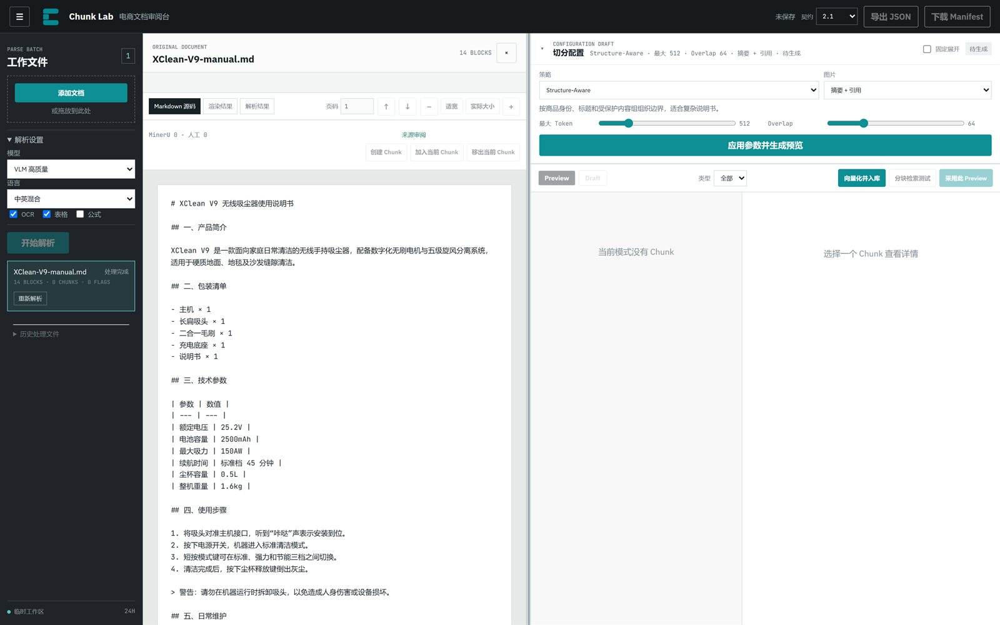
1 2 3 4☰ 收起文件栏。| 区域 | 位置 | 作用 |
|---|---|---|
| 顶栏 | 页面顶部 | 保存状态、契约版本、导出 JSON、下载 Manifest |
| 工作文件 | 左侧 | 添加文档、解析设置、开始解析、切换文件、历史文件、诊断包 |
| 原文区 | 中间 | 查看原始文件或解析结果、翻页缩放、核对来源、人工标注 |
| Chunk 审阅区 | 右侧 | 切分配置、质量指标、Preview/Draft、Chunk 列表与详情 |
顶栏
保存状态显示“未保存”“已保存并重算”“人工 Context 已保存”等，它反映最近一次操作是否落到服务端，不是自动保存开关。契约默认 2.1，只有下游明确要求旧格式时才选 Legacy。导出 JSON 导出当前批次中已有 Draft 的文档；下载 Manifest 只下载清单和统计，不含完整正文。
工作文件栏
从上到下：添加文档/拖放区、解析设置（模型、语言、OCR、表格、公式）、开始解析、文件列表、历史处理文件、临时工作区提示。文件行会显示 Block 数、Chunk 数和 Quality Flag 数；完成后出现“重新解析”，失败时出现“重试”和“下载诊断包”。
历史文件最多保留 50 条，每页 5 条，保存在当前浏览器。页面底部显示“临时工作区 24H”，正式结果请在有效期内导出。
原文区
来源视图标签随文件类型变化；下面依次是页码按钮、页码输入、上一页/下一页、缩小/适宽/实际大小/放大，以及来源审阅工具。右上角 × 用于清除来源锁定。
Chunk 审阅区
从上到下依次是切分配置、质量指标、模式栏（Preview/Draft、类型筛选、下游动作）、Context/审阅进度工具条、Chunk 列表、详情面板。下游动作只在 Draft 中出现；没有 Draft 时，导出和向量化入口不可用。
五分钟跑通一次
以下以一份结构清晰的说明书为例。第一次操作建议按顺序走完，不要跳步。
- 添加文档点击“添加文档”，选择 PDF/Word/Markdown，或拖入上传区。
- 确认解析设置扫描件打开 OCR；有表格打开“表格”；有公式再打开“公式”；中文资料选“中英混合”。
- 开始解析点击“开始解析”，等待文件状态从“上传中/排队/解析中”变为“处理完成”。
- 检查原文切换“原始文件/解析结果”，翻几页，确认标题、表格、图片和阅读顺序没有明显错位。
- 选择策略“切分配置”选 Structure-Aware，最大 Token 先用 512，Overlap 先用 64；图片策略先用“摘要 + 引用”。
- 生成 Preview点击“应用参数并生成预览”，等待右侧出现 Chunk 卡片和质量指标。
- 检查质量先看“切分判断”和“过短/超长”，再抽查 3-5 个 Chunk 的正文、类型和 Source Segments。
- 采用 Preview点击“采用此 Preview”。已有 Draft 时会提示替换影响；确认后进入 Draft。
- 修订 Draft选中 Chunk，点击“编辑”，修正文字和类型；必要时拆分、合并、排除。
- 按需增强处理图片摘要、Context、表格检索关系；需要按商品交付时确认 SPU 归属。
- 向量化并入库点击“向量化并入库”，选择 Embedding 模型和目标数据库，依次完成切分、向量化、入库。
- 验证与导出用“分块检索测试”看 Recall@K；确认无误后导出 JSON，或按 SPU 生成 Markdown。
只是内部试跑、不要求人工审阅时，可以在解析完成后直接点“向量化并入库”。它会自动切分、采用 Preview、向量化并入库，但不会替你审核内容。正式交付仍建议走完整审阅链路。
上传与解析
支持的文件
| 类型 | 扩展名 | 解析方式 | 来源定位特点 |
|---|---|---|---|
.pdf | MinerU 云端解析 | 页码 + bbox，最适合逐框核对 | |
| Word | .docx | MinerU + Visual Copy | 解析结果 + 版面对照，复杂浮动对象需复核 |
| PowerPoint | .pptx | MinerU + Visual Copy | 按幻灯片页审阅，注意阅读顺序 |
| Excel | .xlsx | MinerU + Visual Copy | 重点检查表头、合并单元格、行组 |
| 图片 | .png .jpg .jpeg | MinerU | 单页图片，可作为图片 Chunk |
| Markdown | .md | 本地解析 | 只有文本和结构，没有页面 bbox |
| 纯文本 | .txt | 本地解析 | 只有文本范围，没有页面 bbox |
不要把文件扩展名改成不匹配的格式，解析器会按真实内容判断。
解析设置
| 设置 | 选项 | 什么时候用 |
|---|---|---|
| 模型 | VLM 高质量 / Pipeline | 复杂版面、图文混排优先 VLM；常规文档可用 Pipeline |
| 语言 | 中英混合 / 英文 | 中文或中英混排选前者；纯英文选后者 |
| OCR | 开/关 | 扫描 PDF、图片文字无法直接提取时打开 |
| 表格 | 开/关 | 需要保留表格结构时打开，默认开 |
| 公式 | 开/关 | 技术文档、数学公式时打开，默认关 |
解析设置只作用于本次提交。需要换一套设置时，另建批次，或在确认影响后对单份文档“重新解析”。
文件状态
| 状态 | 含义 | 你该做什么 |
|---|---|---|
| 待解析 | 文件只在浏览器待提交列表 | 设置好后点“开始解析” |
| 上传中 | 正在提交原文件 | 保持页面打开，不要重复点击 |
| 排队 | 服务端已接收，等待解析 | 等待；其他文件可独立推进 |
| 解析中 x/y | 正在处理，已提取 x/y 页 | 等待，大文件会更久 |
| 处理完成 | Parsed Document 可用 | 点击文件进入审阅 |
| 已复用 | 命中相同内容 + 相同配置的解析缓存 | 直接审阅，必要时抽查来源 |
| 失败 | 当前文档未完成解析 | 看错误说明，下载诊断包，确认原因后重试 |
重新解析与诊断包
文档完成后，文件行出现“重新解析”。如果已有 Preview/Draft，页面会警告：重新解析会清除旧 Parsed Document、Preview、Draft、Revision 和 Context。文档失败时按钮显示“重试”，只作用于当前文档。
出现解析失败、MinerU 结果异常、bbox/页码异常或 Visual Copy 失败时，文件行会出现“下载诊断包”。点击一次，等待“已下载”。诊断包用于排查问题，不要直接当作交付物，也不要在里面写入密钥。
左下角“临时工作区 24H”表示上传与解析结果属于临时数据。需要长期保留的内容，请在有效期内导出 JSON/Manifest 或 SPU Markdown。
原文与来源定位
来源视图
| 视图 | 出现条件 | 用途 |
|---|---|---|
| 原始文件 | PDF、PNG、JPG | 看原页面，核对 bbox |
| Visual Copy | DOCX、PPTX、XLSX | 看转换后的版面对照 |
| Markdown 源码 | .md | 看原始 Markdown |
| 渲染结果 | .md | 按解析 Block 看渲染文本 |
| TXT 源码 | .txt | 看纯文本 |
| 解析结果 | 所有完成解析的文档 | 看 Content Block、类型和规范化状态 |
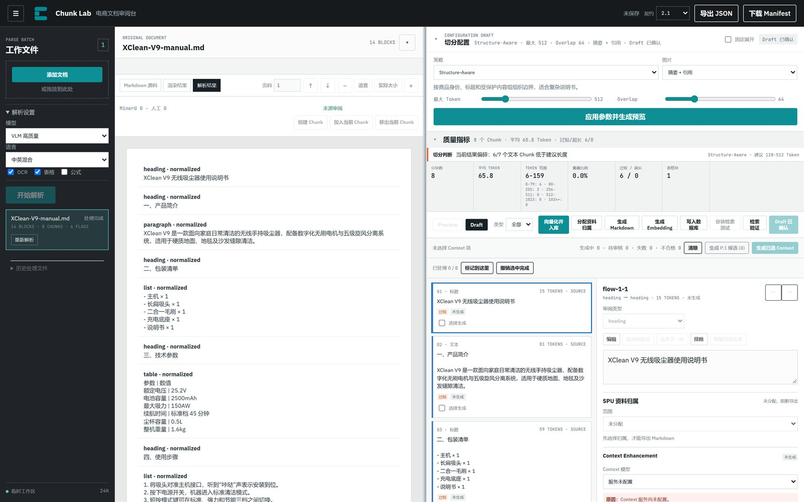
heading · normalized），点击可以定位 Chunk。Markdown/TXT 没有页面坐标，因此人工框选、bbox 高亮和跨页合并不适用；这类文件主要靠 Chunk 文本和 Source Segment 的字符范围核对。
翻页与缩放
- 页码按钮：
P.1、P.2……点击跳转。 - 页码输入框：输入数字回车。
- ↑ / ↓：上一页 / 下一页。
- − / +：缩小 / 放大。
- 适宽 / 实际大小：适配可视区 / 按原始比例显示。
PDF 采用窗口化渲染，只渲染当前页附近几页；滚动时页码会自动更新。
双向定位
- 点击 Chunk 卡片：原文区跳到它的第一个来源位置并高亮来源框。
- 点击原文中的来源框：Chunk 列表定位到引用它的 Chunk。
- 按住 Ctrl（Mac 为 ⌘）点击：累加选择多个来源。
- 点击详情面板的 Source Segments：同样可以跳回原文。
- 点击原文区右上角
×：清除来源锁定。
OVERLAP 表示这个来源片段同时被相邻 Chunk 重叠引用，是切分参数产生的正常现象，不是重复内容错误。若提示“所选来源暂无对应 Chunk”，说明当前 Preview/Draft 没有引用它：可能被排除、只存在于人工标注层，或需要重新生成 Preview。
切分配置
六种策略
| 策略 | 适用场景 | 参数 | 特点 |
|---|---|---|---|
| Structure-Aware | 大多数商品说明书、章节清晰的文档 | 最大 Token、Overlap | 按商品身份、标题和受保护内容组组织边界；默认首选 |
| SentenceSplitter | 连续自然语言、段落型说明 | 最大 Token、Overlap | 优先保留完整句子，可能偏短 |
| TokenTextSplitter | 需要稳定 Token 尺寸、结构要求弱 | 最大 Token、Overlap | 尺寸最直接，可能在语义边界附近切开 |
| Semantic Boundary | 主题切换明显、长文 | Buffer、断点 %、最大 Token | 用相邻句子窗口的语义距离找断点；超长结果按完整句子回退 |
| 父子分块 | 长文档、需要“子块检索、父块回填” | 父块 Token、子块 Token、子块重叠 | 子块用于向量检索，命中后返回父块上下文 |
| 人工框选切分 | 版面复杂、自动检测错误明显 | 无统一 Token 参数 | 以 MinerU 框为起点逐页修订，控制最精确，工作量最大 |
实测默认值：Structure-Aware / SentenceSplitter / TokenTextSplitter 均为 512 / 64；Semantic Boundary 为 Buffer 1 / 90% / 768；父子分块为 父 1536 / 子 384 / 重叠 64。
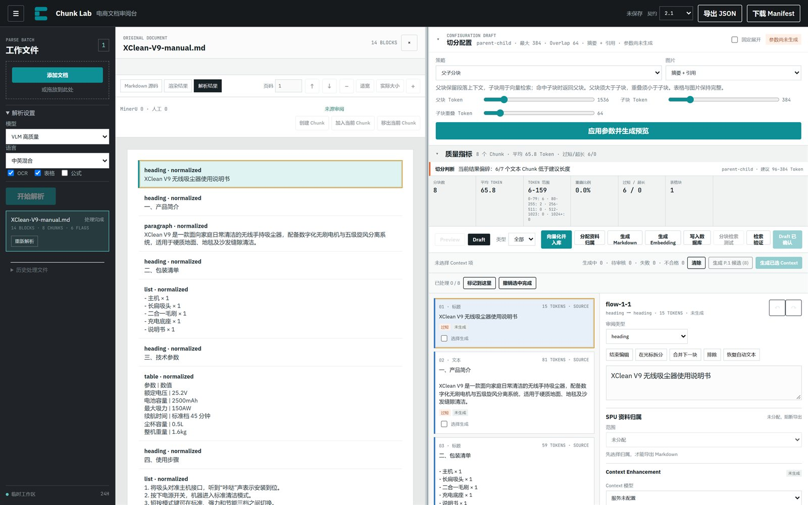
参数怎么调
- 最大 Token：文本 Chunk 的目标上限。说明书通常 512 起步；参数密集的文档可调到 768-1024。
- Overlap：相邻 Chunk 的重叠 Token，必须小于 Chunk 大小。问答型检索可用 64；需要更强上下文连续性时加到 96-128。
- Buffer：语义断点比较时，当前句子前后各取几句组成窗口。1-2 足够。
- 断点 %：阈值越高，断点越少、块越大。90 是保守起点。
- 父块 / 子块 / 子块重叠：父块用于回填，子块用于检索；父块必须大于子块，重叠必须小于子块。
调参后配置会标记为“参数尚未生成”，旧 Preview 失效。必须点击“应用参数并生成预览”才会更新。
图片策略
| 策略 | 结果 | 适用 |
|---|---|---|
| 摘要 + 引用 | 图片保留对象引用，需要人工审核摘要；摘要作为图片检索文本 | 图片本身承载商品信息，需要被检索 |
| 仅引用 | 不生成图片摘要，必须关联至少一个同文档的有效文字 Chunk | 图片只是正文的配图，靠正文检索 |
| 排除 | 图片不进入有效下游检索 | 装饰图、水印、无关图片 |
配置区的图片策略是生成 Preview 时的默认值；进入 Draft 后，可以在单个图片 Chunk 中改。
配置草稿与预览失效
切分配置有三层状态：配置草稿（你当前选的策略和参数）、Preview（按某一版配置生成的结果）、Draft（采用后形成的可修订结果）。
当你改了参数但还没重新生成时，配置区显示“参数尚未生成”，旧 Preview 标记为过期，“采用此 Preview”按钮变成“请先生成新 Preview”。这是为了避免“用旧结果配新参数”，不要绕过它。
Preview 与质量指标
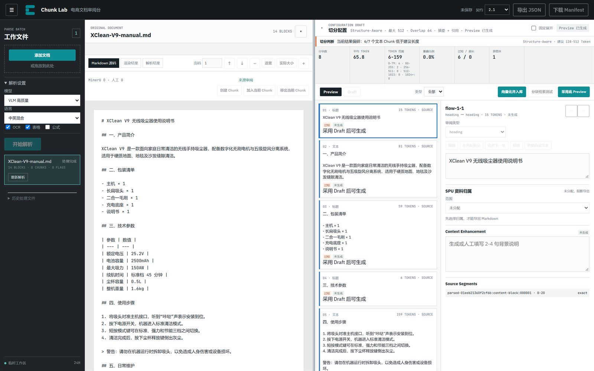
1 2 3生成 Preview
自动策略点击 应用参数并生成预览。生成期间按钮禁用，配置区显示“生成中”，右侧 Chunk 列表暂时不可用；完成后自动切到 Preview 标签。生成失败时，错误框按“原因 / 影响 / 下一步”显示，先按下一步处理，不要连续点击。
质量指标怎么看
| 指标 | 含义 | 判断 |
|---|---|---|
| 分块数 | 当前 Preview 的 Chunk 总数 | 与文档章节数、页数对比，过多可能偏碎 |
| 平均 TOKEN | 每个 Chunk 的平均 Token | 与目标大小对比 |
| TOKEN 范围 | 最短-最长 | 范围过宽说明大小不均 |
| 重叠比例 | 自动策略产生的实际重叠比例 | 与 Overlap 参数对照 |
| 过短 / 超长 | 低于建议下限 / 高于目标上限的文本 Chunk 数 | 先看“切分判断”的解释 |
| 跨页块 | 来源跨多个页面的 Chunk 数 | PDF 中有跨页表格/长段落时正常 |
| 图片块 / 表格块 | 图片/表格 Chunk 数 | 与原文数量对照，缺失要查解析 |
“切分判断”是提示，不是合格分数。例如“当前结果偏碎：6/7 个文本 Chunk 低于建议长度”，通常说明文档本身章节短、列表多，或最大 Token 设得太小。短块不一定错，但要确认检索时不会丢上下文。
Chunk 卡片
每张卡片显示序号和类型、Token 数和来源页码（没有页码时显示 SOURCE）、正文预览、质量标记（过短、超长、OVERLAP、需要复核、来源仅定位到页面 等）以及 Context 状态。Draft 中卡片还会出现“选择生成”复选框。
模式栏的“类型”下拉可以只看某一类 Chunk。人工框选模式下类型筛选会隐藏，因为结果由标注框决定。
采用 Preview，进入 Draft
点击 采用此 Preview。第一次采用时，Preview 变成 Draft，进入可编辑状态。如果已有 Draft，页面会先计算替换影响：多少人工作业会被清除、多少个 Context 会失效、多少个 Chunk 受影响。确认后才会替换；取消则保持原 Draft。
| Preview | Draft | |
|---|---|---|
| 可编辑 | 否 | 是 |
| 可生成 Context | 否 | 是 |
| 可执行 Embedding/入库 | 否 | 是 |
| 可导出 | 否（需先采用） | 是 |
| 重新生成 | 可直接重新生成 | 需确认替换影响 |
如果 Preview 和 Draft 同时存在，模式栏会显示 放弃 Preview。点击后回到当前 Draft，不影响已保存的修订。
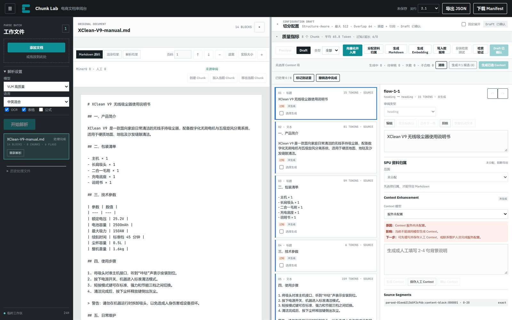
修订 Draft
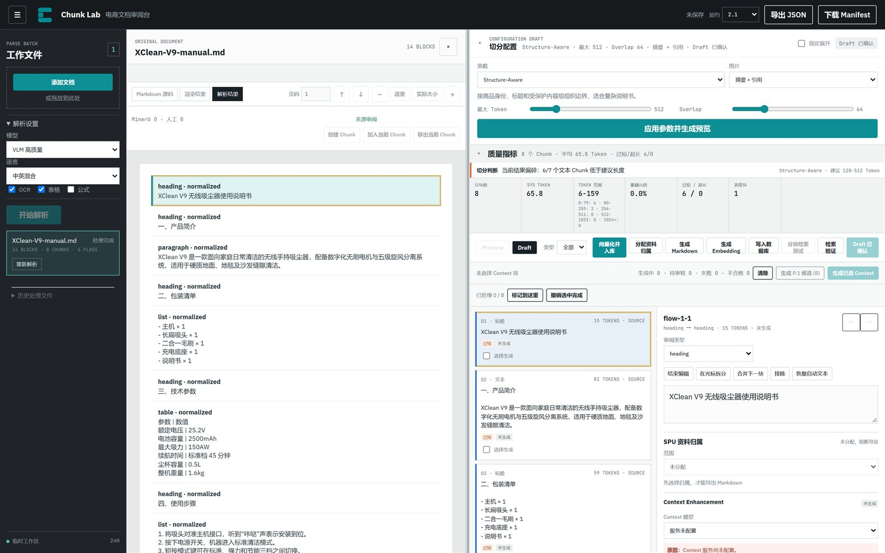
编辑文字和类型
- 在 Chunk 列表选中一个 Chunk。
- 点击详情面板的 编辑。
- 修改正文，或在“审阅类型”下拉中改类型。
- 离开输入框时，系统自动保存并让服务端重算派生状态。
- 等待顶栏显示“已保存并重算”。
类型可选：标题、文本、列表、表格、图片、公式、代码、警告、图注、脚注、纯文本修复。修改类型会改变下游处理方式。例如把文本改成表格，会打开表格编辑器；把图片改成文本，会失去图片策略。
拆分
- 先把光标放在正文中间，再点击 在光标拆分。
- 仅文本类型可用。
- 只有正文与自动文本一致时才能精确推导来源；人工改写后先点 恢复自动文本。
- 拆分后新 Chunk 会获得新 ID，原 Chunk 标记为被替换。
合并
- 合并下一块：只能合并相邻且类型兼容的 Chunk。
- 不相邻、类型不同、跨文档都不能合并。
- 合并后服务端重算来源范围，来源会保留。
排除与恢复
排除后，Chunk 保留在 Draft 和审计轨迹中，但不进入有效 Embedding 下游。选中已排除的 Chunk，按钮变成 恢复。排除不是删除，不会删除原文或解析结果。
撤销与重做
详情面板右上角的 ↶ ↷ 作用于当前 Draft 的修订历史，最多保留 40 步。服务端重算完成后才能继续撤销。
Source Segments
详情面板底部列出每个 Chunk 的来源：Content Block ID、字符范围（0-20 这类）或“Block 级来源”、页码或 parsed_only、OVERLAP 标记。点击任意来源会跳回原文并高亮。PDF 能定位到 bbox；Markdown/TXT 只能定位到文本 Block。
审阅进度
Draft 工具栏显示“已处理 x / y”。标记到这里把当前 Chunk 及之前的所有 Chunk 标记为已处理；撤销选中完成取消当前 Chunk 的完成标记。进度保存到服务端，刷新后恢复。这是协作进度，不是质量门槛；不要求 100% 才能导出，但建议在交付前清零。
人工框选切分
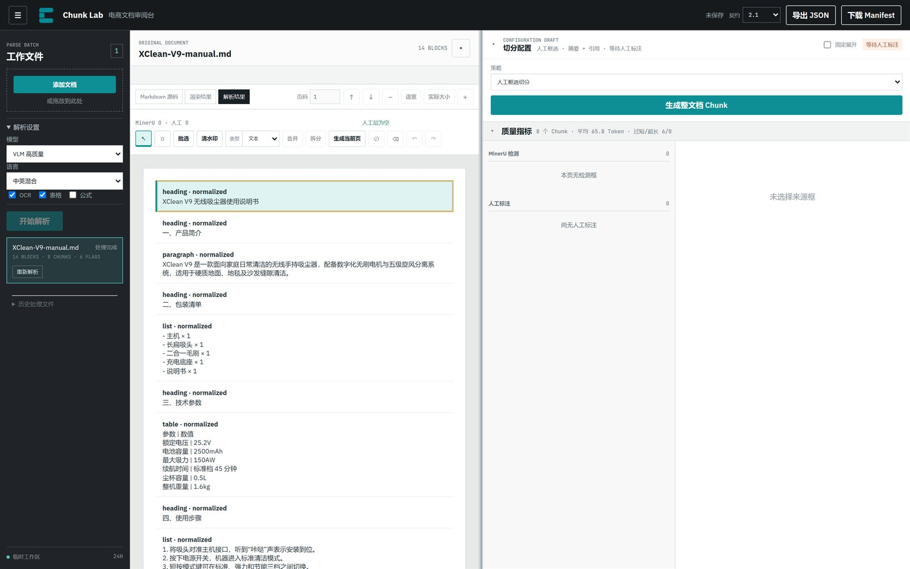
人工框选适合 PDF、图片、Office Visual Copy 这类有页面坐标的文档。Markdown/TXT 没有 bbox，主要依赖文本 Chunk，不建议用人工框选。
| 工具 | 作用 |
|---|---|
| 选择 | 点选来源框；Ctrl/⌘ 多选 |
| 新建文本框 | 在页面上拖出一个新框 |
| 批选 | 框选多个 Block |
| 清水印 | 指定页码范围，批量清理水印 |
| 类型 | 把选中框设为文本、标题、表格、图片、列表、公式、代码、警告、图注 |
| 合并 | 合并同页选中的框 |
| 拆分 | 恢复合并前的框 |
| 生成当前页 | 只按当前页有效框生成部分 Preview |
| 排除 | 切换选中框的排除状态 |
| 删除框 | 删除人工框，不影响原文件 |
| 撤销 / 重做 | 人工标注层的历史 |
生成当前页适合逐页检查，生成的是部分 Preview；生成整文档 Chunk按所有页面的人工标注生成完整 Preview。部分 Preview 不能直接当作最终结果，正式确认前应完成所有相关页面并生成整文档。
人工框没有可用文字时，详情区会出现 人工转录文字。填写后保存到人工修订，页码和坐标仍作为来源，不会写回 Parsed Document。
Context 增强
有些 Chunk 单独看缺少主语、型号或章节背景。例如一个 Chunk 只写“续航时间为 45 分钟”，检索时不知道是哪款产品。Context 就是附加在 Chunk 外的 2-4 句背景说明，只在 Embedding 时与正文组合，不替代原文。
谁能生成
- 只有 Draft 中的 Chunk 能生成。
- Chunk 必须“可生成”：未被排除、内容合格、有可靠文本；图片还要满足图片策略要求。
- 图片“仅引用”策略自身不生成 Context，应在其关联的文字 Chunk 上生成。
- 服务端必须配置 Context 模型。当前部署未配置模型时，下拉显示“服务未配置”，仍可人工填写。
批量生成
- 在 Draft 的 Chunk 卡片勾选 选择生成。
- 点击 生成已选 Context。
- 或点击 生成 P.x 候选（n），只处理当前页符合推荐规则的 Chunk。
- 等待工具栏显示“生成中 / 待审核 / 失败 / 不合格”。
如果选中的 Chunk 已有“已确认”或“人工修改”的 Context，页面会二次确认是否覆盖。不要在不必要的情况下覆盖人工结果。
状态与操作
| 状态 | 含义 | 下一步 |
|---|---|---|
| 未生成 | 还没有 Context | 生成，或直接填写人工 Context |
| 生成中 | 请求未结束 | 等待，不要重复提交 |
| 待审核 | 模型结果已返回 | 对照正文检查，确认或修改 |
| 已确认 | 模型结果已人工确认 | 可进入 embeddingText |
| 人工修改 | 人工保存了 Context | 可进入 embeddingText |
| 失败 | 请求失败 | 已保存内容不受影响；重试或人工填写 |
| 已失效 | Chunk 内容/来源变化后旧 Context 过期 | 旧内容只供查看，不进入 embeddingText |
操作按钮：生成 Context 只生成当前 Chunk；保存人工 Context 保存人工编写或修改的内容；确认 Context 确认“待审核”的模型结果；“实际采用的 Context 范围”和“跳过的邻居”用于核对模型用了哪些文档范围。
当前部署的模型列表为空，Context 模型和图片理解模型都显示“服务未配置”。可用替代路径：人工填写 Context，保存后状态为“人工修改”，可进入下游；图片使用“仅引用”或“排除”，等配置模型后再生成摘要。
图片与表格
图片策略
| 策略 | 图片自身文本 | 是否发 VLM | 必须关联文字 |
|---|---|---|---|
| 摘要 + 引用 | 人工审核后的摘要 | 可选 | 否 |
| 仅引用 | 空 | 否 | 是，至少一个有效文字 Chunk |
| 排除 | 空 | 否 | 否 |
摘要 + 引用
- 选中图片 Chunk，点击“编辑”。
- 图片策略选“摘要 + 引用”。
- 从“图片理解模型”下拉选择管理员配置的 profile。
- 点击 发送图片并生成摘要。这可能产生模型费用，只点一次。
- 阅读只读的“VLM 原始摘要”，对照原图检查商品、型号、数值、单位、颜色和图中文字。
- 在“人工摘要”中改写错误或不完整内容；在“人工补充”中补充检索信息。
- 检查“最终生效文本”。
- 点击 保存图片策略，等待保存完成。
VLM 失败不会覆盖已保存摘要。没有配置模型时，不能生成，但可以手写摘要或改用其他策略。
仅引用
- 图片自身不进入文本 Embedding。
- 必须关联至少一个同文档、未排除、可检索的文字 Chunk。
- 关联文字不会自动拼进图片摘要；下游通过关联文字工作。
- 文字 Chunk 被排除/替换后，服务端会重算图片资格，详情会提示失效关联。
表格
把 Chunk 类型设为 table 后，详情面板变成表格编辑器：编辑表格标题、列标题、单元格文字；上方/下方加行，左侧/右侧加列，删除选中列，删除指定行；勾选单元格后“合并选中”或“拆分单元格”；按来源行组显示“行组 n”，重复表头会标注；点击 保存表格，等待服务端重算。
- 合并必须是连续矩形，不能跨来源行组。
- 包含跨行合并时，部分增删会被阻止，先拆分。
- 每个来源行组至少保留一行；表格至少保留一行。
表格下方还有 普通检索关联文字：搜索并勾选同一文档中的有效文字 Chunk，点击 保存表格检索版本。成功后显示版本号和“已保存并就绪/未就绪”。表格检索只引用关联文字，不需要人工摘要或 VLM；未关联文字时不能保存。
SPU 资料归属
Chunk Lab 不只输出一份文档，还要把资料组织到商品（SPU）上。确认资料归属后，才能按 SPU 生成 Markdown，并支持一份文档分发到多个 SPU。
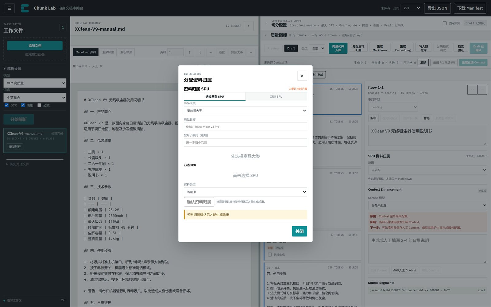
当前部署 /api/spu-categories 返回空，说明商品大类还没有建。第一次使用要先新增类目。
新建类目与 SPU
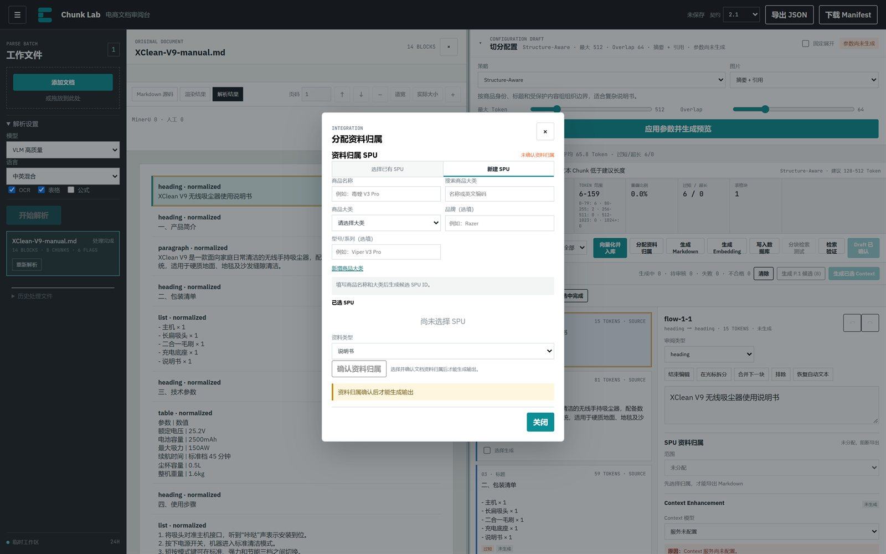
- 切到 新建 SPU。
- 填写商品名称，例如“毒蝰 V3 Pro”。
- 在“搜索商品大类”输入名称或英文编码；如果没有匹配，点击 新增商品大类。
- 填写类目名称和英文编码（最多 8 位），点击 保存类目。
- 回到新建 SPU，选择类目，按需填写品牌、型号/系列。
- 系统生成候选 SPU ID，并检查疑似重复。
- 没有重复时点“创建并使用”；有疑似重复时先核对，再决定“使用此 SPU”或“仍然创建新 SPU”。
- 创建后 SPU 加入“已选 SPU”列表。
选择已有 SPU
切到 选择已有 SPU，先选商品大类，再输入商品名称或型号缩小范围，点击“加入已选”。
资料类型
| 选项 | 适用 |
|---|---|
| 说明书 | 使用说明、操作指南 |
| 参数表 | 规格、技术参数 |
| 安装指南 | 安装、部署、组装 |
| 售后政策 | 保修、退换、维修 |
| 混合资料 | 多种类型混在一份文档 |
| 其他 | 不属于以上类型 |
确认归属与 Chunk 例外
选择至少一个 SPU 和资料类型后，点击 确认资料归属。确认前，普通 Chunk 会继承文档级 SPU；确认后可以逐个设置 Chunk 例外；未确认时，“生成 Markdown”不可用。
| Chunk 范围 | 含义 | 导出行为 |
|---|---|---|
| 指定 SPU | 只属于勾选的目标 SPU | 只进入这些 SPU 的 Markdown |
| 公共资料 | 复制到所有目标 SPU | 每个目标 SPU 都包含 |
| 未分配 | 没有归属 | 阻断导出 |
| 冲突 | 归属互相矛盾 | 阻断导出 |
存在未分配或冲突时，整个 SPU Markdown 导出会被阻断。先逐块处理，再生成。
Markdown 与 Manifest
确认归属后，点击 生成 Markdown。结果区按 SPU 列出状态（尚未生成、待生成、已生成、已生成含排除项、已阻断、需重新生成、失败）、文件名、导出版本和 Markdown/Manifest 下载链接，以及阻断或过期原因。
文件命名规则：{spuId}_{documentType}_{来源文件名}_{exportVersion}.md。Markdown 顶部包含 SPU、文档类型、来源文档、来源版本、Review Revision 和导出版本，正文按 Chunk 顺序输出，表格转为 Markdown 表格，图片转为图片引用，重叠内容去重。
多 SPU 时，每个 SPU 生成一个 child；任一 child 被阻断，整体状态为 blocked。文档或审阅版本变化后，旧导出会变成 stale，需要重新生成。
向量化、入库与检索
当前可用的模型和数据库
| 类型 | 当前值 |
|---|---|
| Embedding | 文本向量 1024，1024 维，最大 8192 Token |
| 数据库 | 测试知识库，pgvector，schema 2.0 |
| Context / VLM | 未配置（模型列表为空） |
生成 Embedding
进入 Draft，点击 生成 Embedding（或直接使用“向量化并入库”），选择模型，等待任务完成。每个 Chunk 的状态：成功、失败、跳过。被排除、不合格、仅引用图片或无有效文本的 Chunk 会跳过。任务级信息包括成功/失败/跳过数量、是否幂等复用、是否已失效。修改 Draft 后，旧 Embedding 会标记为失效，需要重新生成。“重试失败项”只重试失败项，不会重做成功项。
写入数据库
先完成 Embedding，点击 写入数据库，选择目标数据库并提交。每个 Chunk 的状态：已写入、未变化、已删除、失败、跳过。未变化表示数据库已有相同版本；已删除通常表示该 Chunk 在新版本中被排除或删除。数据库写入依赖 Embedding 任务，没有成功向量时不要直接点写入。
向量化并入库（快捷路径）
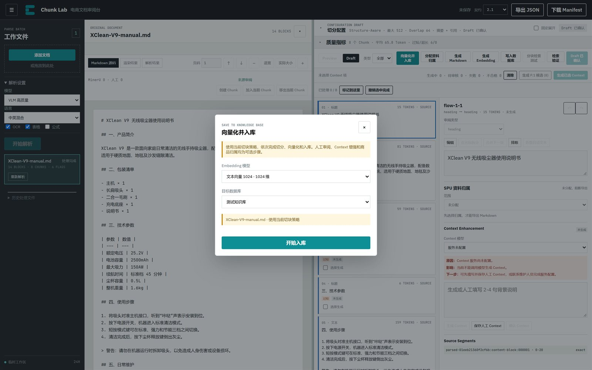
- 解析完成后点击 向量化并入库。
- 选择 Embedding 模型和目标数据库。
- 点击 开始入库。
内部依次执行：如果配置有改动或还没有 Preview/Draft，先切分；如果有 Preview，采用为 Draft（已有 Draft 时可能提示替换）；向量化；写入数据库。
快捷路径不会替你审核内容，也不会生成 Context、图片摘要或 SPU 归属。如果已有 Draft，替换会清除人工修订和 Context，页面会二次确认。入库后仍可回到 Draft 继续审阅，但修改后要重新向量化和写入。
分块检索测试
前提：已经完成数据库写入。点击 分块检索测试，输入测试查询，设置 Top K（默认 5），填写人工确认相关的 Chunk ID（每行一个或用逗号分隔），点击 运行 Recall@K。
结果包括 Recall@K 百分比、命中数/相关数、索引版本、使用的 Embedding 模型、数据库、已入库记录数/Draft Chunk 数，以及每个结果的分数、文本、是否命中；父子分块时还能展开父块。
这是单文档、小样本的检索自检，不是全库评测。它回答“这次入库的 Chunk 能不能被查回来”，不回答“整个知识库的检索质量”。
检索验证
Draft 中还有 检索验证，点击会在新标签页打开“智能检索”应用（当前配置为 http://203.0.113.10:18185/）。它用于在消费端验证问答效果，具体操作见该应用自己的界面。
导出与交付
导出 JSON
- 顶栏“契约”选
2.1（默认）或Legacy。 - 点击 导出 JSON。
- 检查文件名：
chunk-lab-2.1-export.json。
2.1 会保留来源、配置、人工修订、质量标记、图片关联和模型 provenance。Legacy 只用于下游明确要求旧格式的场景；缺少 Contract 2.1 规范模型的文档可能导出失败。
下载 Manifest
点击 下载 Manifest，得到批次级清单：文档 ID、状态、Chunk 数、导出时间、契约版本。它不含完整正文，适合交付核对和归档索引。
SPU Markdown 与 Manifest
在“分配资料归属”对话框中生成，每个 SPU 一份 Markdown、一份 Manifest。下载链接只在生成成功后出现。
导出前的检查
- 顶部保存状态不是“未保存”。
- Draft 中要交付的 Chunk 没有意外“排除”。
- 表格、图片、Context 的修改已保存。
- SPU 归属没有“未分配/冲突”（按 SPU 交付时）。
- Embedding/数据库任务是最新版本（需要下游检索时）。
- 导出文件里没有密钥、连接串、预签名 URL 或向量值。
协作、保存与只读
文档租约
同一份文档同一时间只允许一个会话编辑。打开文档时，前端会申请一个 60 秒租约，并定时续租。如果另一个会话正在处理，当前页面显示“文档正在由其他会话处理，当前为只读状态”：可以查看原文、解析结果和已保存内容；编辑、生成、入库等按钮不可用；占用结束后页面会自动恢复编辑，不需要刷新。
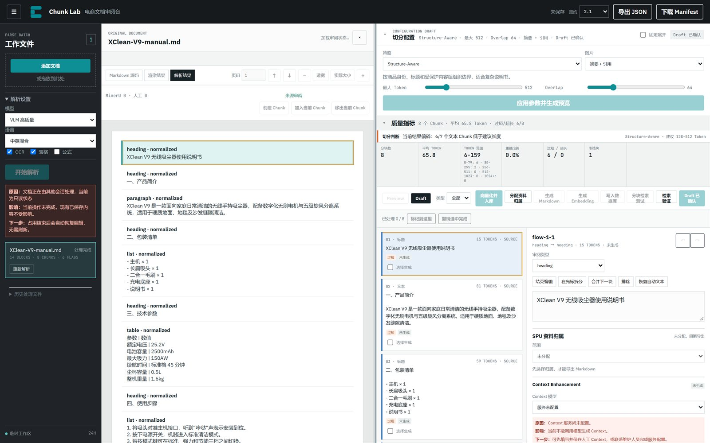
不要用多个标签页同时编辑同一文档。需要并行处理时，选择不同文档。
保存状态
| 显示 | 含义 |
|---|---|
| 未保存 | 页面刚打开或还有操作未提交 |
| 已保存并重算 | Chunk 修改已保存，服务端完成派生重算 |
| 人工 Context 已保存 | Context 已写入 Draft |
| 保存失败 | 请求失败，先处理错误再继续 |
错误按三段显示：原因（为什么没完成）、影响（哪些结果没生成，哪些已保存内容仍然安全）、下一步（你可以执行的恢复动作）。优先按“下一步”处理，不要因为页面没更新就连续点击。
当前部署实测
以下结果来自 2026-11-10 对 http://203.0.113.10:18184/ 的实际访问，仅代表当前测试环境。
| 检查项 | 结果 |
|---|---|
| 登录 | 成功进入 XShipAI 工作台 |
| 应用数量 | 6 个 |
| Chunk Lab 健康检查 | {"ok":true} |
| Chunk Lab 版本 | v0.1.47 |
| Context/VLM 模型 | 空列表，界面显示“服务未配置” |
| Embedding 模型 | 1 个：文本向量 1024，1024 维，8192 Token |
| 数据库 | 1 个：测试知识库，pgvector，schema 2.0 |
| SPU 商品大类 | 空列表，需要先新增 |
| 智能检索地址 | http://203.0.113.10:18185/ |
演示文档结果
用一份 1.3 KB 的 Markdown 说明书 XClean-V9-manual.md 做了只读验证：
| 指标 | 结果 |
|---|---|
| 解析 | 本地解析完成，14 个 Block |
| 切分策略 | Structure-Aware，512 / 64 |
| Chunk 数 | 8 |
| 平均 Token | 65.8 |
| Token 范围 | 6-159 |
| 过短 / 超长 | 6 / 0 |
| 表格块 | 1 |
| 类型 | 标题、文本、列表、表格 |
结果解读：这份文档章节短、列表多，8 个 Chunk 里有 6 个文本块低于 Structure-Aware 的建议下限（128 Token）。这不是解析错误，而是“短章节文档”的正常表现。若用于检索，可考虑：把最大 Token 调到 768-1024，让相邻短章节合并；或改用父子分块（子块 384、父块 1536），检索命中后回填父块；或在人工框选模式下合并过短章节。
本次验证没有执行 Embedding、数据库写入和 SPU Markdown 生成，避免向共享测试库写入演示数据。因此这三个入口的界面可见，但结果状态未在本手册中作为实测结论。
功能可用性
| 功能 | 当前状态 | 说明 |
|---|---|---|
| 上传与解析 | 可用 | Markdown/TXT 本地解析；PDF/Office/图片走 MinerU |
| 六种切分策略 | 可用 | 人工框选需要页面 bbox |
| Preview / Draft / 修订 | 可用 | 已实测生成 8 个 Chunk 并进入 Draft |
| Context 生成 | 不可用（未配置模型） | 可人工填写 Context |
| 图片摘要 | 不可用（未配置模型） | 可用“仅引用”或“排除” |
| 表格编辑与检索版本 | 可用 | 依赖表格 Chunk 和有效文字 Chunk |
| SPU 归属与 Markdown | 需先建类目 | 当前商品大类为空 |
| Embedding | 已配置 | 未执行写入验证 |
| 数据库写入 | 已配置 | 未执行写入验证 |
| 检索测试 | 需先入库 | 未执行 |
| JSON / Manifest 导出 | 可用 | Draft 存在时启用 |
故障排查
| 现象 | 可能原因 | 处理 |
|---|---|---|
| 上传后立即失败 | 格式不支持、文件损坏、加密、对象存储未配置 | 换格式或解密；下载诊断包；联系管理员 |
| 解析结果为空或乱码 | 扫描件未开 OCR、语言选错、文件是图片型 PDF | 打开 OCR，确认语言；重新解析 |
| “开始解析”按钮灰色 | 没有待上传文件 | 先添加文件 |
| “应用参数并生成预览”灰色 | 没有选中已完成文档，或文档只读 | 选中“处理完成”的文档；等待租约恢复 |
| 改了参数但预览没变 | 只改了配置草稿，没有重新生成 | 点“应用参数并生成预览” |
| “采用此 Preview”变成“请先生成新 Preview” | 配置指纹变了，旧 Preview 过期 | 重新生成 Preview |
| 采用 Preview 时要求确认替换 | 已有 Draft，替换会清除修订/Context | 先导出或确认影响，再决定 |
| Context 生成按钮灰色 | 非 Draft、Chunk 不可生成、未选模型、已排除 | 看详情面板的“原因/影响/下一步” |
| 图片摘要按钮灰色 | 策略不是“摘要 + 引用”，或没有 VLM 模型 | 改策略；没有模型时手写摘要或用“仅引用” |
| “仅引用”保存失败 | 没有关联有效文字 Chunk | 搜索并勾选至少一个文字 Chunk |
| SPU Markdown 按钮灰色 | 未确认资料归属、存在未分配/冲突 Chunk | 先确认归属，再逐块处理例外 |
| SPU 导出显示“已阻断” | 有 Chunk 未分配或冲突 | 看阻断原因，修正 Chunk 归属 |
| SPU 导出显示“需重新生成” | 文档或审阅版本变化，旧导出过期 | 重新生成 Markdown |
| Embedding 部分失败 | 模型超时、文本不合格、维度不匹配 | 看失败原因，只重试失败项 |
| 数据库写入失败 | 没先做 Embedding、连接失败、维度不匹配 | 先完成 Embedding；检查数据库 profile |
| 检索测试按钮灰色 | 还没有数据库任务 | 先完成“写入数据库” |
| 页面提示只读/其他会话处理 | 另一个标签页或用户持有 60 秒租约 | 关闭其他会话，等待自动恢复 |
| 刷新后历史文件不见了 | 清除了站点数据或换了浏览器 | 从原批次入口重新打开；服务端数据可能仍在 24 小时内 |
| 导出为空或失败 | 没有 Draft，或 Legacy 缺少 2.1 模型 | 先采用 Preview；换 2.1 契约 |
最佳实践与验收清单
参数起步建议
| 文档类型 | 策略 | 参数 |
|---|---|---|
| 商品说明书（章节清晰） | Structure-Aware | 512 / 64 |
| 长说明书、问答检索 | 父子分块 | 父 1536 / 子 384 / 重叠 64 |
| 连续段落、政策文本 | SentenceSplitter | 512 / 64 |
| Token 预算严格 | TokenTextSplitter | 512 / 64 |
| 主题切换明显 | Semantic Boundary | Buffer 1 / 90% / 768 |
| 版面复杂、自动检测差 | 人工框选 | 逐页修订 |
审阅顺序
- 先看解析标题、表格、图片、阅读顺序。
- 再看切分质量指标 + 抽查 Chunk。
- 再改内容文字、类型、拆分/合并/排除。
- 再做增强图片摘要、Context、表格关联。
- 再做归属SPU 文档级 + Chunk 级。
- 最后做下游Embedding → 数据库 → 检索测试 → 导出。
不要跳过第 1、2 步直接入库。快速入库适合试跑，不适合正式交付。
交付前清单
- 文件状态为“处理完成”，没有解析失败。
- 每个 Chunk 的类型正确，表格/图片没有被误判为文本。
- 过短/超长块已评估，必要时调参或合并。
- Source Segments 能回到正确页码/Block。
- 人工修订已保存，顶栏不是“未保存”。
- 图片策略符合下游需求；仅引用都有文字关联。
- Context 已确认或人工修改，过期 Context 已处理。
- 表格检索版本已保存（如使用表格检索）。
- SPU 归属已确认，没有未分配/冲突。
- Embedding 没有失败项，数据库写入完成。
- Recall@K 自检通过（如需要）。
- 导出的 JSON/Markdown 不含密钥、连接串、预签名 URL 或向量值。
按钮速查与状态字典
按钮速查
| 按钮/控件 | 位置 | 作用 |
|---|---|---|
| 添加文档 | 左栏 | 选择或拖入文件 |
| 开始解析 | 左栏 | 提交当前批次 |
| 重新解析 / 重试 | 文件行 | 重跑单份文档，可能清除旧结果 |
| 下载诊断包 | 文件行 | 下载脱敏诊断 JSON |
| 应用参数并生成预览 | 切分配置 | 按当前参数生成 Preview |
| 生成整文档 Chunk | 人工模式 | 按人工标注生成完整 Preview |
| 生成当前页 | 人工模式 | 生成部分 Preview |
| 采用此 Preview | 模式栏 | Preview → Draft |
| 放弃 Preview | 模式栏 | 丢弃 Preview，保留 Draft |
| 编辑 / 结束编辑 | 详情 | 进入/退出 Chunk 编辑 |
| 在光标拆分 | 详情 | 文本 Chunk 按光标拆分 |
| 合并下一块 | 详情 | 合并相邻同类型 Chunk |
| 排除 / 恢复 | 详情 | 切换下游资格 |
| 恢复自动文本 | 详情 | 丢弃人工正文修改 |
| 保存表格 | 表格编辑器 | 保存结构化表格 |
| 保存表格检索版本 | 表格详情 | 保存表格与文字 Chunk 的检索关系 |
| 发送图片并生成摘要 | 图片详情 | 调用 VLM，可能产生费用 |
| 保存图片策略 | 图片详情 | 保存策略、摘要和关联 |
| 生成 Context | 详情 | 单块生成 |
| 保存人工 Context | 详情 | 保存人工背景说明 |
| 确认 Context | 详情 | 确认待审核结果 |
| 生成已选 Context | Context 工具条 | 批量生成 |
| 生成 P.x 候选 | Context 工具条 | 生成当前页推荐项 |
| 标记到这里 | 审阅进度 | 批量标记完成 |
| 分配资料归属 | 模式栏 | 打开 SPU 对话框 |
| 确认资料归属 | SPU 对话框 | 固定文档级 SPU |
| 生成 Markdown | 模式栏/SPU 对话框 | 按 SPU 生成 Markdown |
| 生成 Embedding | 模式栏 | 启动向量化任务 |
| 写入数据库 | 模式栏 | 写入 pgvector |
| 向量化并入库 | 模式栏 | 切分→向量化→入库 |
| 分块检索测试 | 模式栏 | 运行 Recall@K |
| 检索验证 | 模式栏 | 打开智能检索应用 |
| 导出 JSON | 顶栏 | 导出当前批次 |
| 下载 Manifest | 顶栏 | 下载批次清单 |
状态字典
本手册基于当前部署的实际界面和接口整理。平台升级后，按钮名称、默认参数或模型配置可能变化，以页面实际显示为准。